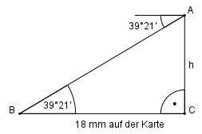

Aufgabe 89 Wie hoch liegt A über B, wenn auf einer Karte 1 : 25 000 der Abstand AB = 18 mm beträgt?

21 21’ = ----° = 0,35° 60 18 mm auf der Karte sind 18 * 25 000 mm = 450 000 mm = 450 m in der Natur. Im Dreieck BCA: h tan 39,35 ° = --------- | *450 m 450 m 450 m * tan 39,35° = h h = 450 m * 0,8199 = 369 m